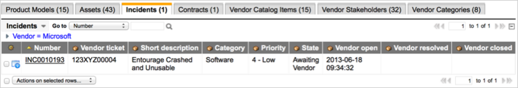
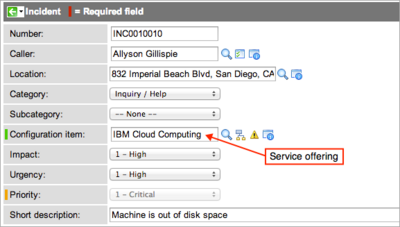
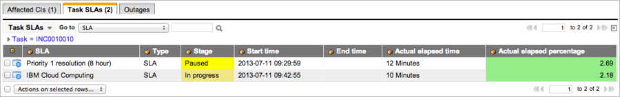

Using Vendor Ticketing
Contents
1 Overview
Vendor ticketing enables vendor performance to integrate with contract and service offering SLAs by adding functionality to the Incident [incident] table that starts a service offering SLA from a specific incident state. Fields record the date and time of specific vendor events in the life of an incident and appear as options for starting an SLA. When you create an incident that requires vendor interaction, the system can start an SLA when the incident is opened, closed, or resolved. The SLA stages example uses demonstration data included with vendor ticketing to illustrate how you can start or stop SLAs while waiting for vendor input for an incident.
Vendor ticketing adds a module called Vendor Credit that allows an organization to track credit owed by a vendor from breached business service contracts.
2 Configuring SLAs for Vendor Ticketing
Vendor ticketing enables you to pause contract SLAs and start service offering SLAs automatically when a vendor-related incident is opened, closed, or resolved.
2.1 Configuring a Contract SLA
To create a new contract SLA:
- Navigate to Service Level Management > SLA > SLA Definitions.
- Click New.
- Select Contract SLA when prompted for the type of SLA to create.
- In this example, a contract SLA is configured to start when a priority 1 incident is opened in Paris. The SLA is configured to pause when the user working on the incident is waiting for additional information from the vendor: [State] [is] [Awaiting Vendor].
{kind=link}
2.2 Configuring a Service Offering SLA
You can use these timestamp fields from a vendor-related incident to start a service offering SLA.
- Vendor closed: Start the SLA when a vendor-related incident is closed.
- Vendor open: Start the SLA when a user saves an incident after selecting a vendor. You can select a vendor when the incident state is set to Awaiting vendor.
- Vendor resolved: Start an SLA when a vendor-related incident is resolved.
| |
Note: In most cases, Vendor open is the best selection for starting an SLA, but your business process might require a different trigger. |
To start a service offering SLA when a vendor incident opens:
- Navigate to Business Services > Service Offering SLAs > SLAs.
- Click New.
- Select Incident [incident] in the Table field.
- Select Vendor open in the Set start to field.
- This sets the SLA to start at the time shown in the Vendor open field on the incident form. The system creates the timestamp when the incident form is saved in a state of Awaiting Vendor.
- Create the Start condition for the SLA.
- [Active] [is] [true] and [State] [is] [Awaiting Vendor]
- This condition starts the service offering SLA when a user saves an active incident in the Awaiting Vendor state.
- Create the Stop condition for the SLA.
- [State] [is not] [Awaiting Vendor]
- This condition stops the service offering SLA when a user changes the Awaiting vendor state to any other state.
- Click Submit.
When a user saves an incident after specifying a vendor, the system pauses any contract SLA in use. The system then checks the Set start to field in the service offering SLA to determine which vendor event to use. Because Vendor open starting option was selected for the SLA, it starts on the date and time that appears in the Vendor open field in the incident.
{kind=link}
3 Adding Vendor Information to Incidents
Vendor ticketing adds these date and time fields to the Metrics view of the Incident form:
- Vendor open: Automatically populated with the date and time the incident record is first saved with a value in the Vendor field.
- Vendor closed: Automatically populated with the date and time the incident record is closed with a value in the Vendor field.
- Vendor resolved: Automatically populated with the date and time the incident record is resolved with a value in the Vendor field.
An option called Awaiting vendor in the State field allows a technician to pause contract SLAs and start the service offering SLA while waiting for input from a vendor. This state enables additional fields for vendor information.
{kind=link}
- Open an incident record in the Default view.
- If the incident cannot be resolved until the vendor takes some action, select Awaiting Vendor in the State field.
- This state pauses any SLAs affected by this incident that have Awaiting Vendor defined as a pause condition, ensuring that vendor delays do not impact SLA performance. When you select a state of Awaiting Vendor, the following fields appear:
- Vendor: [Required] Select the vendor associated with the incident. The system automatically populates this field when the incident is associated with a configuration item manufactured by a company that is also a vendor.
- Vendor ticket: [Required] Enter a case or incident number provided by the vendor. This is the vendor's identification number for the issue and is not used for ServiceNow processing.
- Vendor point of contact: Enter contact information for the vendor. This might include the name of a customer service representative, a phone number, email address, or other helpful information.
- Note: These fields are also available in the Mobile view of the Incident form.
- Add a comment or work note to provide additional information.
- Save the record.
- After the vendor resolves the issue, select a state of Active to restart the SLA.
{kind=link}
3.1 Viewing Incidents from Vendor Records
Vendor ticketing adds the Incidents related list to the Vendor view of the Company form, showing all incidents related to that vendor.
- Navigate to Vendor Performance > Vendors > Vendors.
- Select a vendor, such as Microsoft, from the list.
- Select the Incidents related list.
- The related list shows incident information, such as Vendor ticket, State, Vendor open, Vendor resolved, and Vendor closed.
- 
{kind=link}
| |
Note: The related list is visible only if there is at least one incident associated to the vendor you are viewing. |
4 SLA Stages Example
This example uses demonstration data available with vendor ticketing to illustrate how ServiceNow can manage SLA stages for different incident states. For information about configuring SLAs, see Defining an SLA.
- Create a new incident record and select the IBM-T42-DLG computer as the affected Configuration item.
- Set the Impact and Urgency to either Medium or High.
- You call Sony, the vendor for this CI, and update the incident state to Awaiting Vendor.
- The dependent fields appear, with Sony entered as Vendor.
- Complete the required vendor fields and save the record.
- You discover that this CI is part of a service offering called IBM Cloud Computing that has an SLA. You change the Configuration item value to the service offering and save the record.
- 
- The system starts the SLA for the IBM Cloud Computing service offering. The SLA for this service offering is configured to start when the Vendor open event occurs in the incident. The incident state of Awaiting Vendor and the addition of a vendor trigger this event for the SLA when the incident is updated.
- 
- When you have received all the information needed from the vendor, you update the incident state appropriately.
- The SLAs react to each state as follows:
- Awaiting Problem, Awaiting User Info, Awaiting Evidence: You need additional help to resolve this incident. Any of these states marks the service offering SLA as Complete. The incident SLA remains Paused.
- Active: You have all the information you need to continue to work on the incident. This state restarts the paused contract SLA and marks the service offering SLA as Complete.
- Resolved or Closed: You have completed your work on the incident. Either state marks both SLAs as Complete.
- The issue with the original CI reoccurs, and you reopen the incident by setting the state to Active.
- ServiceNow creates a new contract SLA with the same start date and time of the original SLA and sets the stage to In progress.
{kind=link}
{kind=link}
{kind=link}
{kind=link}
{kind=link}
{kind=link}
{kind=link}
{kind=link}
{kind=link}
{kind=link}
Contents > Deliver > IT Services > Incident Management
Contents > Deliver > Non-IT Services > Vendor Performance